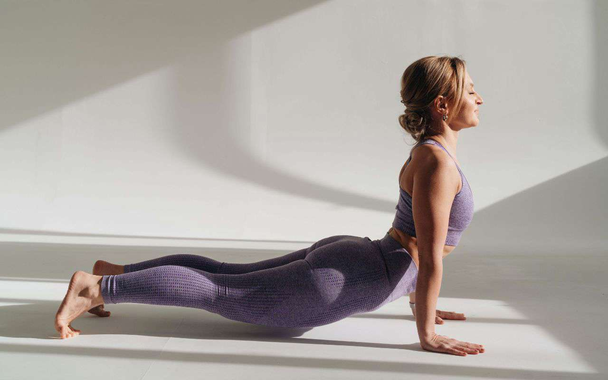
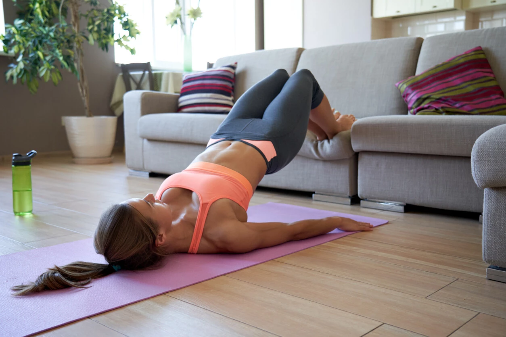

CROSSTRAINING
El Crosstraining es una actividad deportiva basado en la realización de movimientos funcionales bajo una elevada intensidad. Esta actividad busca cumplir una serie de objetivos como son:
- Mejorar la resistencia cardiovascular.
- Desarrollar la fuerza.
- Desarrollar la potencia.
- Mejora la velocidad.
- Mejora la flexibilidad.
- Mejora la coordinación.
- Mejora del equilibrio.
- Mejora del equilibrio.
YOGA
El yoga es una práctica que conecta el cuerpo, la respiración y la mente. Esta práctica utiliza posturas físicas, ejercicios de respiración y meditación para mejorar la salud general.
EN CASA
Hacer ejercicio en casa también es ideal para las personas que no tienen mucho tiempo para ir al gimnasio, ya que un entrenamiento rápido de 20 minutos en casa puede ser muy efectivo. También es una buena alternativa para las personas que tienen un presupuesto más ajustado.
ACONDICIONAMIENTO
Consiste en desarrollar y mantener un nivel óptimo de fuerza, resistencia, flexibilidad y agilidad para llevar a cabo las actividades diarias y participar en diversas actividades físicas. A su vez, el acondicionamiento físico abarca varios componentes importantes que contribuyen al bienestar general de una persona.